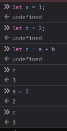

I work as frontend developer in vue and I started programming from doing html, but still I have not really explored it deeply. I want to improve my frontend knowledge!. I decided to show it here with my own wording.
emm... i do not know how to start it. So, the idea is whenever our state/variable changes, we have to update the places where this state was used. below is code example and image
let a = 1;
let b = 2;
let c = a + b;
console.log(c); // c = 3
// however, if we change the value of a our c state will be not change
a = 2; // c remains 3 not 4
// we have to manually update c again

so what should we do? when our state changes we have to notify all the subscribers to our state saying that value is updated and running all the subscriber functions. we can do that by using getters and setters
so here is simple ref object.
function ref(value) {
return {
get value() {
return value;
},
set value(newValue) {
value = newValue;
},
};
}
its not reactive yet. basically when we call get function we must assign the function or place that is using our state as our dependency and when set function is called we are going to traverse our dependencies and re run them. in most cases, we can understand this functions or places as render functions. i mean, when state changes render will be called and our website will be updated or rerendered.
we use set to keep track of our dependencies and one global variable for knowing which function or rendering is happening. vue guys called it effect from side effect idea. coz our states are changing.
here is updated ref
function ref(value) {
const deps = new Set();
return {
get value() {
if (activeEffect) deps.add(activeEffect); // if there is currently running some effect which means its used our state right now, which means we subscribe it to our state by adding to our deps set.
return value;
},
set value(newValue) {
value = newValue;
deps.forEach(dep => dep()); // whenever we get newValue for our state we notify all the dependencies
},
};
}
part with global activeEffect variable and effect function which does side effects
let activeEffect = null;
function effect(fn) { // fn - is some function that used our state
activeEffect = fn; // we set the activeEffect as fn
fn(); // inside this fn, its accessing to some states we have got. and get function will be triggered and activeEffect is our function so it adds to its own deps set.
activeEffect = null;
}
function ref(value) {
const deps = new Set();
return {
get value() {
if (activeEffect) deps.add(activeEffect);
return value;
},
set value(newValue) {
value = newValue;
deps.forEach(dep => dep());
},
};
}
now, its done, we can create our reactive states with ref function and run the functions that are using it with effect function. here is quick example
let counter = ref(0);
function render() {
console.log(`Counter: ${counter.value}`); // lets imagine this as we are updating the real html dom
}
effect(render)
// now whenever we change the counter.value render function will be called.
counter.value++;
i know the real framework does not work like this.
probably, vue nerds, professionals reading this (ofc they dont read my bullshit wording/understanding) might find incorrect or something else but who cares. i now know some pattern and use it maybe somewhere else
so, if u come across with the case where u need to work with reactivity, u can just implement it in any language and use. try it
in the future i will add the comments as well, right now u can email if u want ofc. hover me. u can leave your comments and suggestions or whatever u think of this. thanks
i just shared the thing i learn from my day. im telling this to my mind!
also this might not be only used in vue reactivity*